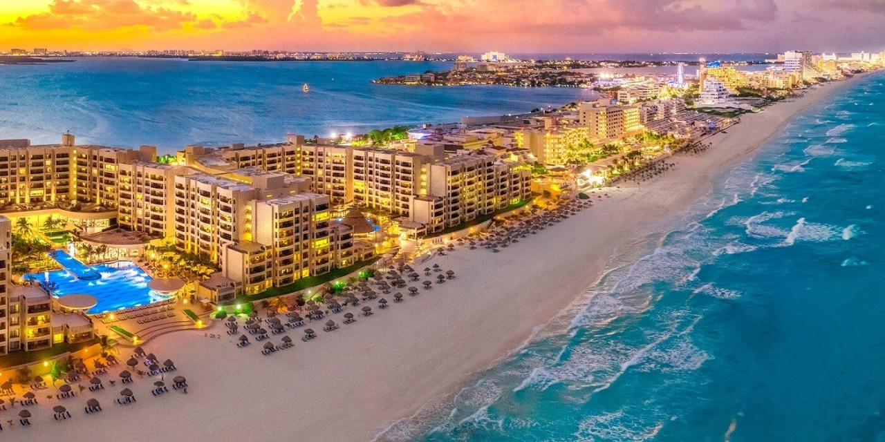
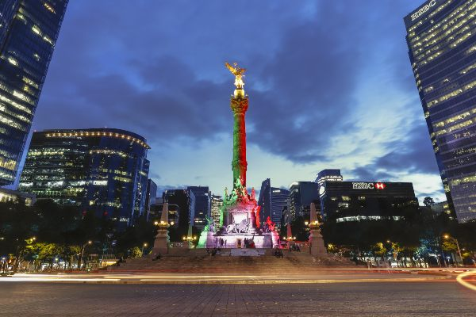

En este Blog daremos a conocer los mejores lugares para viajar en el 2022 y el porque,
basándonos en eventos,
gastronomía, monumentos, cultura, para una experiencia inolvidable para ti y tus seres
queridos.
Obviamente tendremos en cuenta la seguridad sanitaria y las medidas que cada país ofrece y
por tanto elegir un lugar
seguro, pero sin dejar de lado que será increíble. Es claro que no puedes dejar de pensar en
esas vacaciones
que tanto te mereces, pero que aun así, no sabes que lugares visitar, así que, quédate un
rato aquí y
te platicaré los mejores destinos para este 2022
Desarrollo
Nada te deja un mejor recuerdo que un viaje con tus amigos, familia y seres queridos, y por
eso
estamos aquí para mostrarte cuales son los mejores destinos para que tu experiencia sea lo
mas
bella posible Si ya tienes la iniciativa de viajar pero no sabes a donde, checa este blog,
porque
aquí te mostraremos los mejores lugar para este 2022 . Abarcaremos desde destinos turísticos
muy
populares hasta lugares nuevos a los que te encantará ir . Desde luego que haremos una
recopilación
de lo mejor de lo mejor , ya que sabemos que quieres ser parte de ello, y tener una buena
experiencia.
Motivación
Mi motivación nace desde luego de mi familia, ya que somos una familia a la que le gusta
mucho descubrir
nuevos lugares y tener una experiencia agradable, y a veces ni siquiera sabemos a donde
ir , y terminamos eligiendo un lugar que no supera nuestras expectativas, así que hoy
revisaremos
una recopilación de los mejores lugar que por su puesto superaran sus expectativas y mucho
mas.
También me motiva el hecho de que esta lista de lugares, la pueda revisar en un futuro y
decir,
¡wow! he ido a todos estos lugares, ¿y porque no ? , crear otra lista con nuevas
aventuras y experiencias.
Turistas Torre Eiffel
Top 10
Ciudades Turísticas de América
15/10/21
10. Ciudad de México, México
9. Santiago, Chile
8. San José, Costa Rica
7. Machu Picchu, Perú
6. Los Cabos, Baja California
5. Río de Janeiro, Brasil
4. Mendoza, Argentina
3. Punta Cana, República Dominicana
2. Cartagena de Indias, Colombia
1. Cancún, México

Cancún, La mejor playa de México
Sitios para
obtener más información
15/10/21

Angel de la Independencia,CDMX, México
Top 10 Países de América Latina Que Debes Visitar
20/11/21
Conoce estos países de latinoamerica. El autor es el canal de
watchmojo
en Español
fue publicado en 2016
En este video lograremos observar las maravillas de estos 10 lugares, los cuales te sorprenderan
de forma espectacular
aproveha el video, daremos un chapuzón en estos lugares tan hermosos.
Investigación
22/12/2021
Los TOP 12 PAÍSES PARA VISITAR ESTE 2022
Top 12-9
12. Santorini (Grecia)
Las hermosas islas Cícladas, flanqueadas por el cabo del Egeo, nunca dejan de tener licencia
para cautivar, pero Santorini ofrece mucho más. Sus gestos son únicos, sus playas, negras y
rojas, impresionantes acantilados multicolores que alcanzan un máximo de 300 metros y
emocionantes sitios minoicos . Puedes llegar en ferry desde Atenas o en uno de los muchos
cruceros que pasan por las islas griegas.
Incluso si ha visitado estas islas de las Cícladas en el Egeo, las reconocerá al instante,
con sus coloridas casas talladas en acantilados, aguas color zafiro y edificios con cúpulas
de color azul cobalto. Pasee por las tranquilas playas de arena negra o pasee por las calles
de una de las ciudades regionales, como Imerovigli. La hermosa región de Oia es mundialmente
famosa por sus puestas de sol, que parecen aparecer en un caleidoscopio de color antes de
balancearse y alcanzar las estrellas.
11. Islas Galápagos (Ecuador)
Las Islas Galápagos son conocidas por sus muchas especies endémicas, y los estudios de
Charles Darwin lo llevaron a establecer su teoría de la evolución por selección natural. Se
estima que la formación de la primera isla ocurrió hace más de 5 millones de años, como
resultado de la actividad tectónica. Las islas más nuevas, llamadas Isabela y Fernandina,
todavía se están formando (la última erupción volcánica registrada fue en 2009). Al igual
que el Ecuador continental, el archipiélago se encuentra al otro lado del ecuador, al norte
de la isla Isabela. Las Islas Galápagos son el segundo archipiélago con mayor actividad
volcánica del planeta, superando a Hawái, lo que lo coloca en la lista de puntos críticos.
Los volcanes más activos son Cerro Azul, Sierra Negra, Marchena y La Cumbre en la Isla
Fernandina, que son los más activos del archipiélago y uno de los volcanes más activos del
mundo.
10. Petra(Jordania)
Petra es conocida como la "Ciudad Perdida" no solo porque existe desde hace muchos siglos,
desde el siglo VI d.C. cuando sus habitantes abandonaron la ciudad y cayeron en el olvido,
hasta que el explorador suizo Johann la descubrió en el siglo XIX. Ludwig Burckhardt, sino
también porque estaba escondido en la arena. Ha sido enterrada por numerosas tormentas de
arena, terremotos e inundaciones tan gradualmente que solo el 20% de la ciudad está
actualmente abierta a los visitantes, incluso mientras las excavaciones continúan
descubriendo edificios. Contrariamente a la creencia popular, Petra no fue construida en
piedra sino tallada y tallada en piedra, formando un conjunto memorial único que la
convirtió en Patrimonio de la Humanidad en 2016. 1985. El trabajo debió ser muy difícil. Más
de 30.000 personas vienen a vivir a esta ciudad.
9. Los Doce Apóstoles (Australia)
Es increíble cómo aparecen en este lugar de la lista doce cantos rodados perdidos en la
costa australiana. Pero el motivo es su ubicación: en la Great Ocean Road, una de las
carreteras más bonitas del mundo, que recorre la costa suroeste del estado de Vitoria. Los
Doce Apóstoles está a unas 4 horas de Melbourne y es imprescindible en cualquier viaje a
Australia.
Imagínese cientos de años, la marea tardó cientos de años en cavar profundamente en las
cuevas de los acantilados que luego se convertirían en arcos, que eventualmente colapsaron,
dejando solo montículos gigantes de hasta 45 metros de altura. A veces parece que no nos
damos cuenta de lo increíble que es la Madre Naturaleza, solo sentimos la lluvia caer sobre
nuestras manos, o pensamos en las maravillas de galones y galones de agua que se ciernen
sobre nosotros en las nubes y el agua, nunca dejamos de divertirnos.
Top 8-5
8. Las cataratas del Iguazú (Argentina,Brasil)
Las Cataratas del Río Iguazú consisten en una cascada de dos pasos hecha de tres capas de
basalto. Las escaleras tienen entre 35 y 40 metros de altura. Las columnas de basalto son
parte de la Formación Serra de 1.000 metros de espesor en la Cuenca del Paraná
Paleozoico-Mesozoico. La parte superior de estos rangos presenta de 8 a 10 metros de basalto
lenticular altamente estable. La comunicación entre estas capas controla la formación de
cataratas. La tasa de erosión de la cuenca se estima en 1,4 cm/año. Numerosas islas a lo
largo del
cinturón de 2,7 km dividen las cascadas en varias cascadas y cascadas separadas, cuya altura
varía de 60 a 82 metros. El número de estas cascadas más pequeñas oscila entre 150 y 300,
según el nivel del agua. Aproximadamente la mitad del caudal del río cae en un agujero largo
y angosto conocido como la Garganta del Diablo.
7. Coliseo de Roma (Italia)
El Coliseo es un impresionante anfiteatro construido en el siglo I en honor a la dinastía
Flavia, grupo de emperadores que impulsaron su construcción. Siglos más tarde, se conoció
como el Coliseo porque durante el reinado del emperador Nerón se construyó una gran estatua
junto al Coliseo que la gente llamaba la estatua gigante de Nerón. Actualmente, esta estatua
ya no existe porque después de siglos fue utilizada como material de construcción para otros
trabajos arqueológicos. Esta magnífica estructura de gran tamaño es capaz de albergar a más
de 50.000 espectadores
que acudían aquí para presenciar luchas de gladiadores, monstruos y otros espectáculos. La
construcción del Coliseo comenzó en el año 70 d. C. durante el reinado del emperador
Vespasiano y fue completada en el año 80 d. C. por el emperador Tito. En la inauguración se
llevó a cabo una gran ceremonia que duró 100 días, durante la cual el pueblo romano fue
invitado gratuitamente a ver las representaciones en la arena.
6. Parque Nacional del Gran Cañón (EE UU)
Su tamaño y belleza nos hacen humildes. Su inmortalidad es ciertamente lo contrario de
nuestra corta existencia. En su espacio infinito, muchas personas encuentran consuelo en sus
ajetreadas vidas. El Gran Cañón que visitamos hoy es un regalo recibido de generaciones
anteriores. Tómese el tiempo para disfrutar de este regalo. Siéntese y observe cómo cambian
la luz y la sombra. Vea las exhibiciones en el centro de visitantes. Da un agradable paseo
por sus calles y siente el sol y el viento en la cara. Únase al programa de guardabosques.
Disfruta de la dulzura de los cuervos que giran al final. Disfruta del amanecer o del
atardecer. Mientras las sombras se extienden sobre las espirales y las mesitas, comprendan
las enseñanzas que nos da este gran abismo: un sentido de humildad nace de la conexión entre
todos los elementos de la naturaleza y la voluntad de cuidar esta tierra. Debemos
asegurarnos de que las generaciones futuras tengan la oportunidad de conectarse con el
Parque Nacional del Gran Cañón. El Parque Nacional del Gran Cañón recibe alrededor de 4,5
millones de visitantes cada año.
5. Taj Mahal (India)
El estilo arquitectónico del Taj Mahal se inspiró en el mausoleo de Humayun, el segundo
gobernante del Imperio mogol. El Taj Mahal fue construido en la margen derecha del río
sagrado Yamuna. El mausoleo de mármol blanco es simétrico y, por lo tanto, contrasta con
muchas otras estructuras en la India, que a menudo son caóticas y coloridas. La cúpula más
grande del Taj Mahal tiene unos 35 metros de altura y está rodeada por cuatro cúpulas más
pequeñas, cuatro torres y dos anexos de piedra arenisca. No solo es impresionante el
edificio monumental del Taj Mahal, sino también su elaborada decoración. La tumba está
ricamente decorada con caligrafía de versos del Corán, murales geométricos e inscripciones
con adornos ornamentales. El mármol del Taj Mahal ha sufrido durante años debido a las
emisiones de las fábricas de la zona y al intenso tráfico de la cercana Agra. La
contaminación hace que el mármol blanco se vuelva amarillo. El edificio está ubicado en el
Jardín Mughal de aproximadamente 300 metros cuadrados. El jardín mogol fue diseñado en
estilo islámico persa, más precisamente en estilo Charbagh. Se divide en cuatro secciones
separadas por pasillos elevados. En el centro del jardín hay una cuenca de mármol en la que
se refleja el Taj Mahal.
Top 4-1
4. Gran Muralla (China)
La imagen icónica de la Gran Muralla China se remonta a los siglos XV y XVI, cuando los
emperadores Ming reconstruyeron la barrera defensiva en el lado norte de su imperio en
ladrillo y piedra, con una serie de torres conectadas por murales.
A lo largo de la pared, las torretas se colocan a una distancia adecuada para enviar la
alarma rápidamente. A la derecha, parte del muro cerca de Beijing.
Una guarnición de 30 a 50 hombres se alojó en torres defensivas, sirviendo en turnos de
cuatro meses. Los soldados vivían en la misma torre, donde guardaban sus provisiones y
alimentos. Estas construcciones eran en realidad pequeñas fortalezas capaces de resistir
asedios prolongados.
3. Machu Picchu (Perú)
La Reserva Histórica de Machu Picchu está ubicada en la provincia de Urubamba, región Cusco.
Incluyen vastos paisajes naturales y culturales ubicados en una variedad de ecosistemas,
incluyendo otros sitios arqueológicos conectados a las rutas a la ciudad Inca. Machu Picchu
es el sitio arqueológico inca más destacado debido a su diseño urbano innovador, la belleza
arquitectónica y la suavidad de las piedras de los edificios. Aprovechando el terreno de la
cima de la montaña, se convirtió en un tiro majestuoso. Construida en el siglo XV por el
Inca Pachacutec, fue abandonada durante los primeros años de la colonización española y
redescubierta en 1911. La arquitectura de esta ciudad inca se evidencia en sus 200 barrios.,
se mimetiza excepcionalmente bien con el maravilloso entorno natural que le rodea. está
estrechamente relacionado.
2. Gran Barrera de Coral (Australia)
Esta maravilla natural de más de 3000 kilómetros frente a la costa noreste de Australia es
la red de arrecifes de coral más grande del mundo, con 400 especies de coral y 1500 especies
de peces. Cerca de 30 especies de ballenas, delfines, marsopas, 6 especies de tortugas
marinas y 17 especies de serpientes marinas fueron vistas en sus aguas. Si con esta
información no quieres viajar a las playas de Australia, entonces no estás en el espíritu
turístico. Es un paraíso absoluto para buceadores y snorkelers con un ecosistema que cautiva
a todo el que lo visita, con decenas de islas tropicales y playas. Los principales puntos de
acceso son Cairns, Port Douglas y Airlie Beach en Queensland.
En la costa noroeste de Australia se encuentra el mayor grupo de arrecifes de coral del
mundo. Con 400 especies de corales, 1500 especies de peces y 4000 especies de conchas
marinas, la Gran Barrera de Coral ofrece un espectáculo increíblemente diverso y hermoso,
así como un gran interés científico. Además, el área alberga muchas especies en peligro de
extinción, como dugongos y tortugas verdes grandes.
1. Templos de Angkor (Camboya)
Por unanimidad, los templos de Angkor superaron a todos los destinos globales de esta lista.
Angkor Wat es el templo más grande del mundo dedicado a Vishnu y puede parecer fuera de
lugar para el budismo camboyano, pero este magnífico monumento es la joya de la corona de un
reino hindú que una vez se extendió hasta Birmania. electricidad. Es un lugar
extraordinario: una alegoría del cielo en la tierra, tallada en miles de bloques de arenisca
y tallada de arriba a abajo con estatuas de los mitos de Tamyana, Mahabharata y Puranas.
Angkor Wat es la principal atracción de un complejo de más de 1.000 templos, santuarios y
santuarios enclavados entre las selvas del norte de Camboya. Uno de los destinos que todo
visitante debe poner en su lista de deseos.

 Sitios para
obtener más información
Sitios para
obtener más información Investigación
Investigación